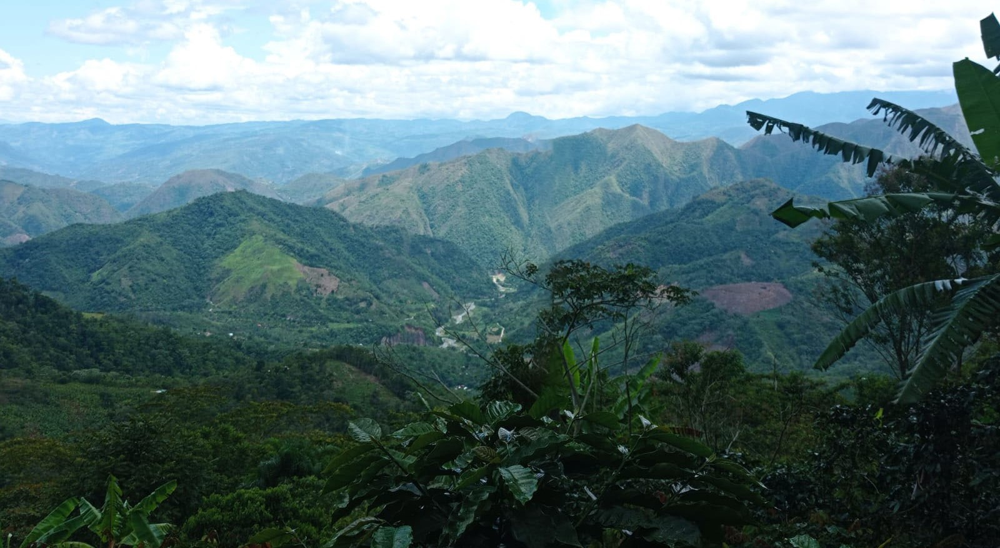

Acerca de Fundo la Arboleda
El negocio de cafetería está ubicado en la región de Chanchamayo, en el corazón de la selva central del Perú. Es bien conocido por producir café de alta calidad con un sabor distintivo que se ha ganado la admiración de personas de todo el mundo.
Desde sus inicios, la empresa se ha comprometido con la calidad y la sostenibilidad, trabajando en estrecha colaboración con los agricultores locales para garantizar que cada grano de café se cultive y procese de manera responsable y respetuosa con el medio ambiente.
Chanchamayo se ha ganado una merecida reputación como líder en la industria del café tanto en el país de Perú como fuera de él gracias a su amplia gama de productos y al énfasis en la excelencia en cada etapa del proceso de producción, desde la plantación hasta la taza.
La empresa cafetalera Fondo La Arboleda de Chanchamayo ha mantenido su compromiso con la calidad y la sostenibilidad desde sus humildes comienzos hasta su posición actual como una empresa de renombre. Continúa innovando y mejorando para satisfacer las necesidades de los amantes del café en Perú.
En Fundo la Arboleda nos dedicamos a producir y vender los mejores granos de café de la región. Nuestra empresa se fundó en 1990 y desde entonces hemos trabajado duro para ofrecer a nuestros clientes la mejor calidad de café posible.
Nos enorgullece poder decir que todos nuestros granos de café son producidos de manera sostenible y respetando el medio ambiente. Además, trabajamos en estrecha colaboración con los agricultores locales para asegurarnos de que reciban un precio justo por su trabajo.